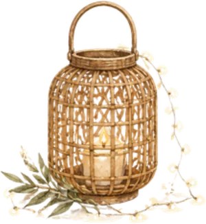
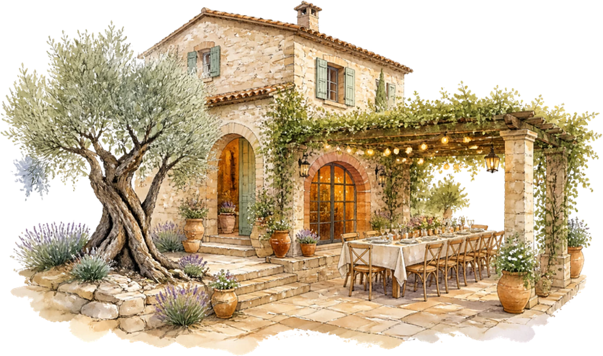
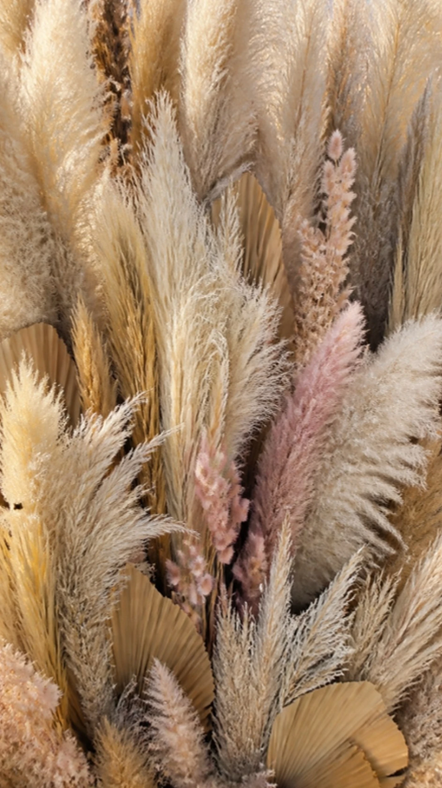
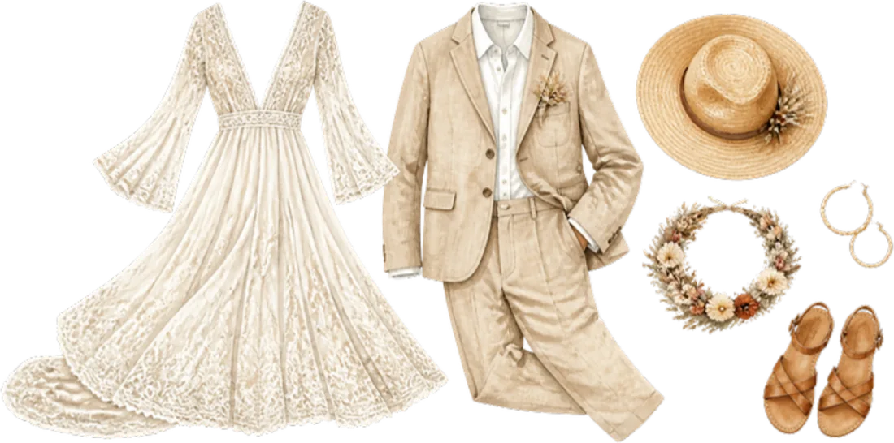
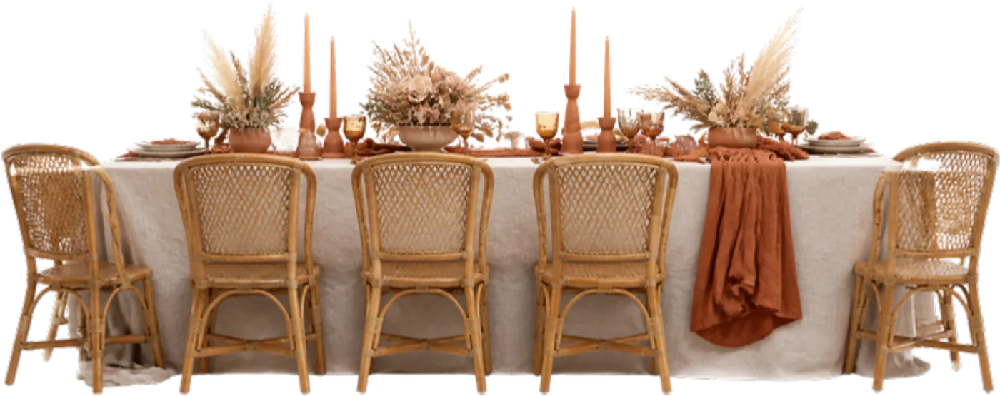

Ils se sont rencontrés sur un sentier des Alpilles, perdus tous les deux, une carte à la main.
Inès & Mathis
Le programme
Samedi 4 septembre 2027
- 17 h 00Cérémonie laïque sous les oliviers
- 18 h 00Rosé et apéritif
- 19 h 30Grande tablée provençale

21 h 00Guirlandes et lanternes- 22 h 00Bal sous les étoiles
- 23 h 30Gâteau des mariés

Le lieu

Mas des Oliviers
Provence

Tenue
Bohème chic
Lin, dentelle et tons de terre. Chapeaux de paille bienvenus ; prévoyez des chaussures plates pour la pelouse.


Il reste
--jours
--heures
--minutes
Votre réponse
Merci de répondre avant le 1er juillet 2027.
Je serai présent·eJe ne pourrai pas venir